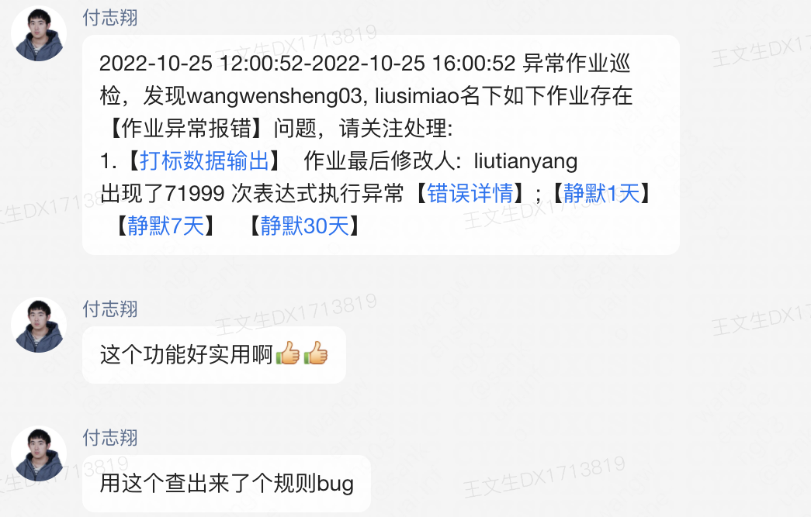
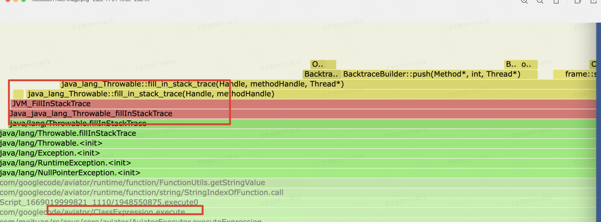

各业务领域存量告警治理情况
基础安全
业务价值：
|
序号 |
案例 |
价值收集 |
|---|---|---|
|
1 |
业务自己排查  |
业务通过告警发现bug |
|
2 |
作业性能优化  |
业务优化后，通过火焰图看，性能提升5%以上 |
本周：当前治理率：3%
指标统计口径 已经治理/总量
本双周有222个风险事件，已经治理的6个
业务治理进度
|
处理时间 |
治理状态 |
告警问题分类【bug,脏数据等】 |
作业名称 |
告警信息 |
|
|---|---|---|---|---|---|
账户安全
本周：当前治理率：5%
进展：11.23号和@汤洲 汤洲沟通了，拉上本组的同事一起治理，治理完毕时间，待确认
|
处理时间 |
治理状态 |
告警问题分类【bug,脏数据等】 |
作业名称 |
告警信息 |
备注 |
|
|---|---|---|---|---|---|---|
|
2022-11-18 |
静默7天 |
脏数据 |
画布：238 |
2022-11-18 06:29:57-2022-11-18 10:29:57 异常作业巡检，发现如下作业存在【作业异常报错】问题，请关注处理: |
脏数据是不是可以过滤下呢 |
|
|
2022-11-24 |
静默30天 |
userid转换的代码逻辑一直有问题，之前笑千帮忙看过，但一直没改 点击展开内容package com.meituan.rc.zeus.nearline.account; import com.google.common.collect.Maps; import com.meituan.rc.zeus.dynamic.script.runtime.IProcessor; import com.meituan.rc.zeus.thrift.fetcher.FetchRequest; import com.meituan.rc.zeus.thrift.fetcher.FetchResult; import com.meituan.rc.zeus.thrift.fetcher.ZeusFetcherService; import com.meituan.service.mobile.mtthrift.proxy.ThriftClientProxy; import org.apache.commons.collections.MapUtils; import org.apache.commons.lang.StringUtils; import org.slf4j.Logger; import org.slf4j.LoggerFactory; import java.util.Map; public class UserIdTranslate extends IProcessor { private static final Logger LOGGER = LoggerFactory.getLogger(UserIdTranslate.class); private static ThriftClientProxy thriftClientProxy; private static ZeusFetcherService.Iface service; private static final String remoteAppkey = "com.sankuai.rc.tatooine.fetcher"; public static final String appkey = "com.sankuai.zeus.nearline"; static { try { //初始化thrift客户端 thriftClientProxy = new ThriftClientProxy(); thriftClientProxy.setServiceInterface(ZeusFetcherService.class); thriftClientProxy.setAppKey(appkey); thriftClientProxy.setRemoteAppkey(remoteAppkey); thriftClientProxy.setRemoteServerPort(9222); thriftClientProxy.setTimeout(3000); thriftClientProxy.afterPropertiesSet(); service = (ZeusFetcherService.Iface) thriftClientProxy.getObject(); } catch (Exception e) { LOGGER.info("INIT_FETCER_ERROR", e); } } public String queryMtRealUserID(String dpUserId,String accountSystem,String zeusRequestId) { Map<String,Object> returnResult = Maps.newHashMap(); try { FetchRequest request = new FetchRequest(); Map<String,String> queryContext = Maps.newHashMap(); request.setMethodName("userIdFetcher"); queryContext.put("dpUserid", dpUserId); queryContext.put("accountSystem", accountSystem); request.setContext(queryContext).setRequestId(zeusRequestId); FetchResult result = service.query(request); if (StringUtils.isNotEmpty(result.getErrMsg())) { LOGGER.error("queryMtRealUserID {}", result.getErrMsg()); return null; } Map<String,String> resultMap = result.getResultMap(); if (MapUtils.isEmpty(resultMap)) { LOGGER.info("queryMtRealUserID empty context:{}", queryContext); return null; } return String.valueOf(resultMap.get("userid")); } catch (Exception e) { LOGGER.error("INVOKE_FETCHER_ERROR method:{} msg:{}", "dfpidOrUuidRiskFetcher", e.getMessage(), e); } return null; } @Override public Map<String, Object> process(Map<String, Object> map) { String dpUserId = String.valueOf(map.get("dpUserid")); String accountSystem = String.valueOf(map.get("accountSystem")); String zeusRequestId = (String)map.get("zeusRequestId"); LOGGER.error("UserIdTranslate :{},{},{}",dpUserId,accountSystem,zeusRequestId); if("8".equals(accountSystem) && StringUtils.isNotEmpty(dpUserId)){ Long current = System.currentTimeMillis(); Long eventTime = Long.valueOf(String.valueOf(map.get("eventTime"))); if(eventTime != null && current < eventTime + 10000){ try { Thread.sleep(10000); }catch (Exception ex){ } } String realUserId = queryMtRealUserID(dpUserId,accountSystem,zeusRequestId); if(StringUtils.isNotEmpty(realUserId)){ map.put("oriUserid",map.get("userid")); map.put("userid",realUserId); } } return map; } } |
画布：189 |
2022-11-24 16:01:22-2022-11-24 20:01:22 异常作业巡检，发现如下作业存在【作业异常报错】问题，请关注处理: |
评估过流量中基本已不存在userid传成点评userid的情况，直接把组件删除 |
|
可信数字
本周：当前治理率：0%
11.23号开始治理，已经找@张二强二强沟通了，开始治理，治理完毕时间待确认，会先静默
|
处理时间 |
治理状态 |
告警问题分类【bug,脏数据等】 |
作业名称 |
告警信息 |
|
|---|---|---|---|---|---|